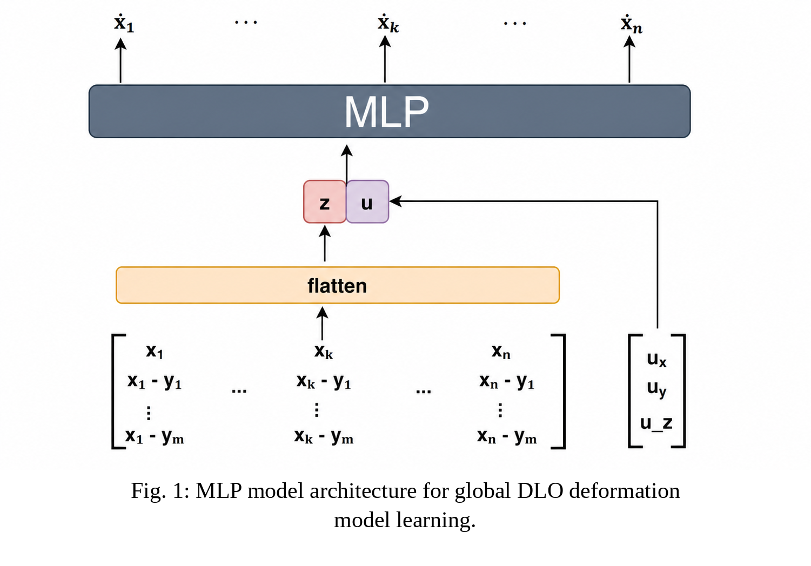
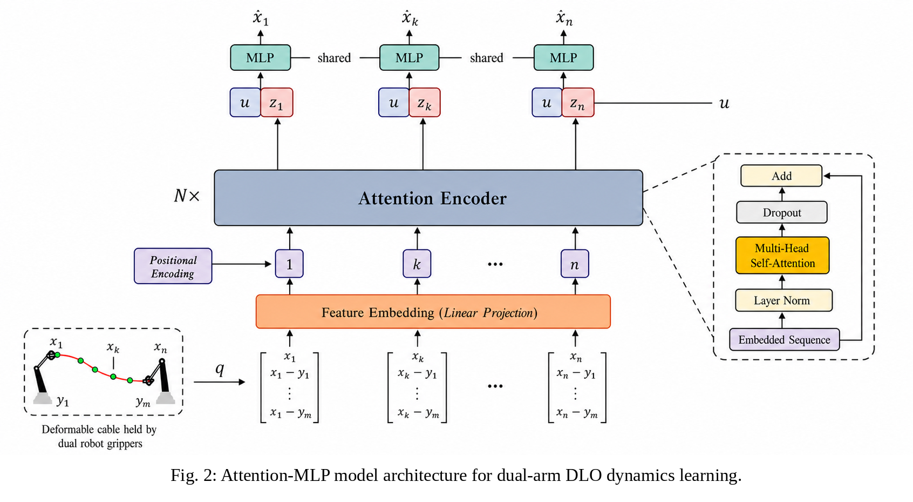
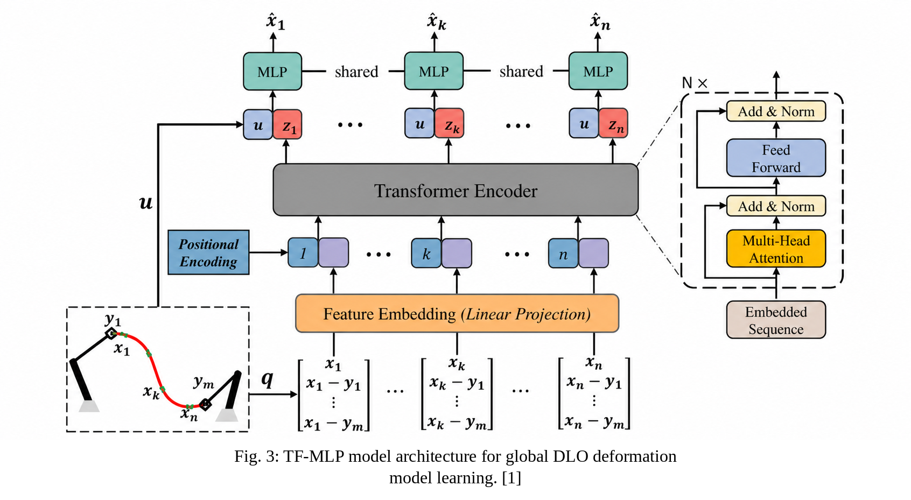

Observe
Represent the cable using 40 ordered three-dimensional feature points.
Robotics · Learned dynamics · Optimal control
A dual-arm framework for controlling deformable linear objects with learned dynamics, gradient-based model predictive control, and differential inverse kinematics.
Unlike a rigid object, a cable can bend into infinitely many shapes. Its response depends on its current geometry, velocity, material properties, and the coordinated motion of both endpoints.
Represent the cable using 40 ordered three-dimensional feature points.
Learn how dual-arm Cartesian commands change the cable-point velocities.
Optimize endpoint velocities online to track a desired cable shape.
Each network receives the same geometric tokens and six-dimensional dual-arm velocity command, then predicts the 3D velocity of 20 dynamic cable points.
Absolute geometry plus the position of every point relative to both controlled endpoints.
A compact baseline that flattens all cable tokens and concatenates the control command.

Self-attention allows each cable point to exchange information with every other point.

A Transformer encoder combines attention and feed-forward processing before shared decoding. Architecture adapted from Tang et al. [1]

Predicted cable-point velocity Ẋ ∈ ℝ20×3, trained with one-step mean squared error.
Valid dual-arm endpoint targets are sampled offline. During rollout, Cartesian proportional control moves both grippers while cable states, endpoint commands, and point velocities are recorded.
assets/data-collection.mp4
At every control update, MPC rolls the learned model forward, optimizes the two endpoint velocity commands, and maps them to joint space using Pinocchio differential inverse kinematics.
assets/mpc-control.mp4
minU Σ ‖Xk − Xgoal‖W2 + λu‖uk‖2 + λΔu‖Δuk‖2